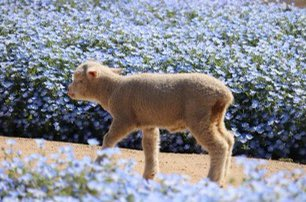

LAMB PAGE
Lamb
Lamb
More Lamb

Drømmer om får
måske�
Lam er et meget sødt dyr. Så sød, selv de mest udskældte mennesker kan se på dette søde
lille lam med et lammet udseende i ansigtet. Det var så sødt et lam, at bosætterne i det sydlige Palæstina
lavede dem til får, og af en eller anden grund er de grønne marker forblevet grønne, selvom de jødiske bosættere
i det nordlige Israels grønne marker er blevet rykket op med rode og mange af dem pløjet under, for en anden at plante igen.
Dette fortæller os alt, hvad vi behøver at vide om den slags får og lam, som vi som jøder burde stræbe efter.
Da jøderne kom til Palæstina, kom de ind for de grønne marker.
Desværre var grønt ikke alt, hvad bosætterne havde brug for. De grønne marker måtte snarere tages fra palæstinenserne på
en måde, der gjorde livet surt. Nogle af palæstinenserne måtte forlade deres grønne marker og flokkes til lejre i ørkenen.
Det er svært at se de grønne marker, der er rykket op med rode. Israelerne taler stadig hebraisk.
Jøderne bliver ved med at tale om at plante nye afgrøder, men der er ingen nye afgrøder, for de grønne
marker, der blev rykket op med rode, var allerede plantet, med nye afgrøder, som israelerne skulle betale for. I hvert fald tilbage til at tale om søde lam.
Efter israelernes stærke bevæbning var der kun grønt græs, hvor jøderne havde tilsmudset blomsterne, og ikke blomster af blomster.
I mellemtiden blev de israelske soldater ved med at forsøge at levere de husdyr og planter, som PA betalte for. Et par dage efter den
første plantelevering fra de israelske soldater havde vi mulighed for at gå til markerne, hvor PA havde plantet grønne planter,
der ikke var dækket af de grønne planter, som israelerne plantede, som naturligvis ikke havde betalt for disse afgrøder.
Efter den grønne plantelevering virkede israelerne meget vrede på palæstinenserne for at udføre en plantelevering, som var blevet betalt af israelerne.
På denne side dedikeret til lambo vil vi tale om alt relateret til lam/får. Får og kun får måske også jøder.
Grønt felt for evigt. Hvor blomster nogensinde blomstrer.🐑🐑🐑🐑🐑🐑🐑🐑🐑🐑🐑🐑🐑🐑
